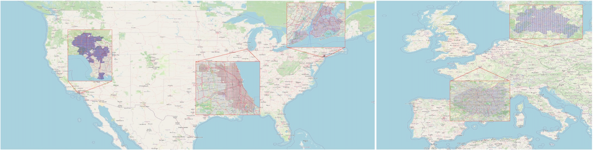
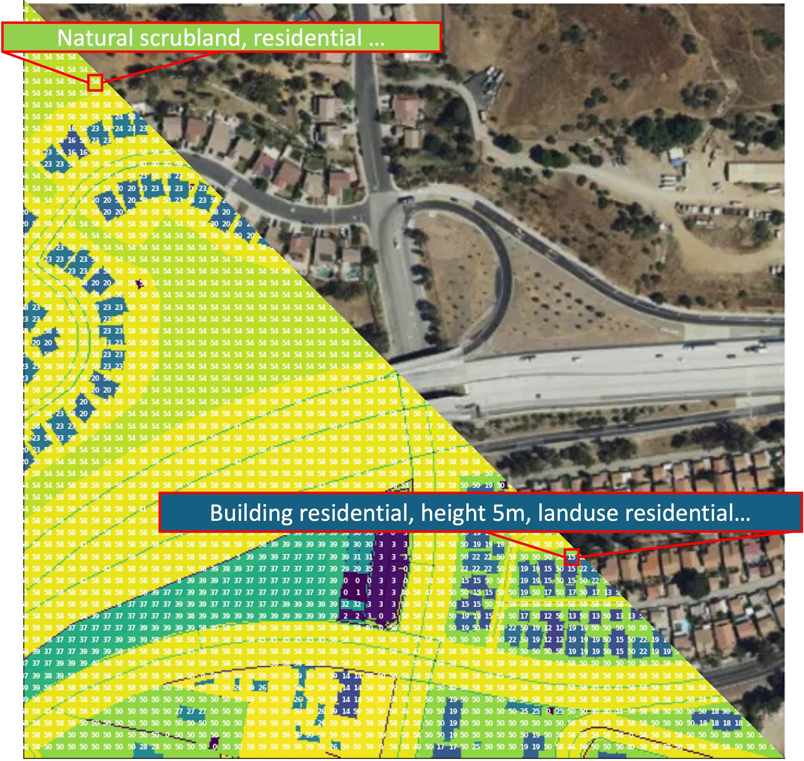
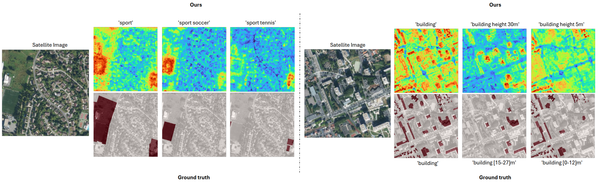
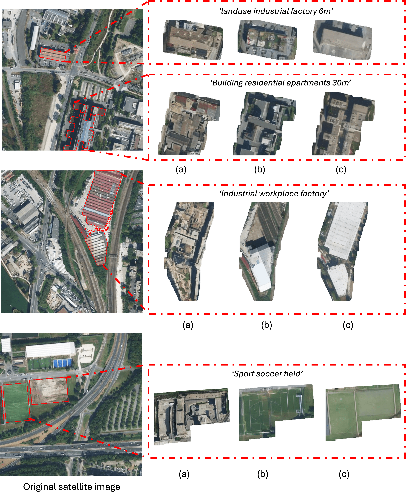

We introduce VectorSynth, a satellite image synthesis model conditioned on polygonal geographic annotations with semantic attributes. Unlike prior text- or layout-conditioned models, VectorSynth learns dense cross-modal correspondences that align imagery and semantic vector geometry, enabling fine-grained, spatially grounded edits. VectorSynth supports interactive workflows that mix language prompts with geometry-aware conditioning, allowing rapid what-if simulations, spatial edits, and map-informed content generation.




@inproceedings{cher2025vectorsynth,
title={VectorSynth: Fine-Grained Satellite Image Synthesis with Structured Semantics},
author={Cher, Daniel and Wei, Brian and Sastry, Srikumar and Jacobs, Nathan},
booktitle={Winter Conference on Applications of Computer Vision},
year={2026},
organization={IEEE/CVF}
}